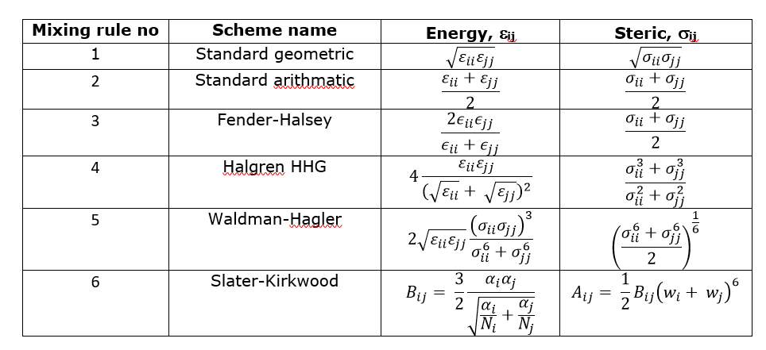

Lennard-Jones Mixing Rules¶
The vdw parameters are normally fitted against the experimental results such as the liquid densities and enthalpy of vaporisation of pure components. It is also a standard practice to obtain parameters of similar type of atoms, of i = j as we have seen in the previous page for the methyl carbon atoms.
However, molecular systems can consist of different types of atoms (where i \(\neq\) j) and each different combination pairs of atom types would have a different set of parameters that are often too many to fit them all.
These missing vdw parameters are usually derived by using some kind of mixing rules involving parameters for those of atomic components (ii and jj) that made up the atom pairs (ij).
Diagram below shows some of the mixing rules for LJ 12-6 functions:
{kind=link}
Out of these rules, the geometric and arithmatic rules are being used the most frequently by a wide range of force field schemes. However, the rules differ from one scheme to the other. For example, OPLS uses geometric rule to determine both the \(\epsilon\) and \(\sigma\) for ij pairs. Whereas, for DREIDING FF, the arithmatic rule is used for the \(\sigma\) and geometric for the \(\epsilon\).
Note
Mixing rules have minimal scientific justification but appear to work ‘quite well’. Also, the mixing rules should only apply to the same function type. For example, you cannot mix parameters between LJ and Buckingham functions. Neither should you mix parameters from LJ 12-6 and, say, LJ 9-6.
Note
In DL_POLY, mixing rules can be defined using the vdw mix directive in the CONTROL file. For example:
vdw mix fender
for Fender-Halsey type of mixing.
In DL_FIELD, mixing rules can be independantly set for the \(\epsilon\) and \(\sigma\) parameters. For the Slater-Kirkwood scheme, DL_FIELD will obtain the atomic data from the dl_field.atom_data file by matching against atom types in DL_F Notation..